vignettes/LSJM_Gollini_Murphy_2016.Rmd
LSJM_Gollini_Murphy_2016.RmdThis code accompany the paper Gollini, I., and Murphy, T. B. (2016), “Joint Modelling of Multiple Network Views”, Journal of Computational and Graphical Statistics, arXiv:1301.3759.
set.seed(1)library(lvm4net)
D <- 2The Girls datasets are available from the RSiena package.
Y1 <- RSiena::s501
Y2 <- RSiena::s502
Y3 <- RSiena::s503
Nb <- nrow(Y1)
Y123 <- list(Y1 = Y1, Y2 = Y2, Y3 = Y3)We fit LSM separately to each network view
We fit LSJM
modLSJM123 <- lsjm(Y123, D) # It takes ~ 40 secondspar(mfrow = c(1,3))
plotY(Y1, Ndata = 1, EZ = Z1, VZ = modLSM1$lsmVZ, main = namesb[1], xlim = XYlimb, ylim = XYlimb, colPl = colPl)
plotY(Y2, Ndata = 1, EZ = Z2, VZ = modLSM2$lsmVZ, main = namesb[2], xlim = XYlimb, ylim = XYlimb, colPl = colPl)
plotY(Y3, Ndata = 1, EZ = Z3, VZ = modLSM3$lsmVZ, main = namesb[3], xlim = XYlimb, ylim = XYlimb, colPl = colPl)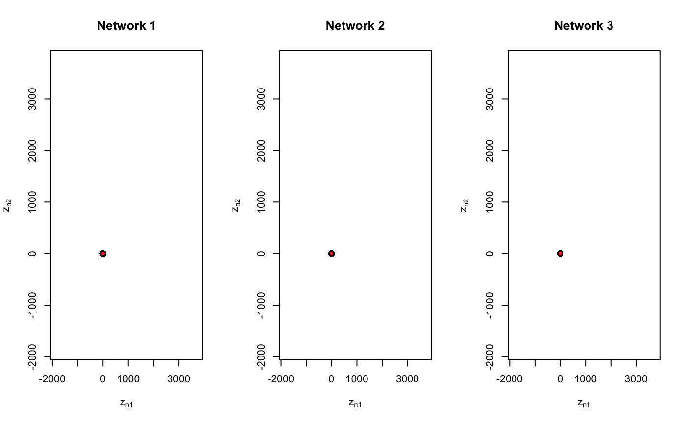
Zlsm <- list()
Zlsm[[1]] <- Z1
Zlsm[[2]] <- Z2
Zlsm[[3]] <- Z3
bpbLSM <- boxroc(Y123,
EZ = Zlsm,
xiT = c(modLSM1$xiT, modLSM2$xiT, modLSM3$xiT),
Lroc = 150,
ROC = TRUE,
BOXPLOT = TRUE,
labelsPlot = namesb
)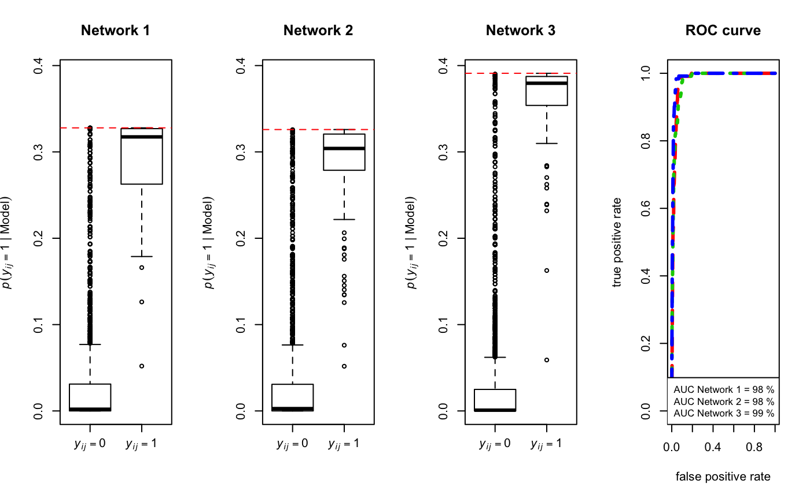
## Network 1 Network 2 Network 3
## 0.9791939 0.9776726 0.9886133plot(modLSJM123, Y123, drawCB = TRUE, plotZtilde = TRUE, colPl = colPl)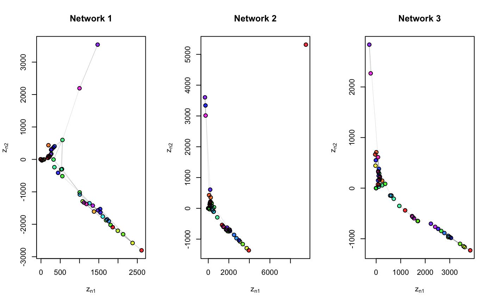
plot(modLSJM123, Y123, drawCB = TRUE, colPl = colPl, main = 'Multiple networks')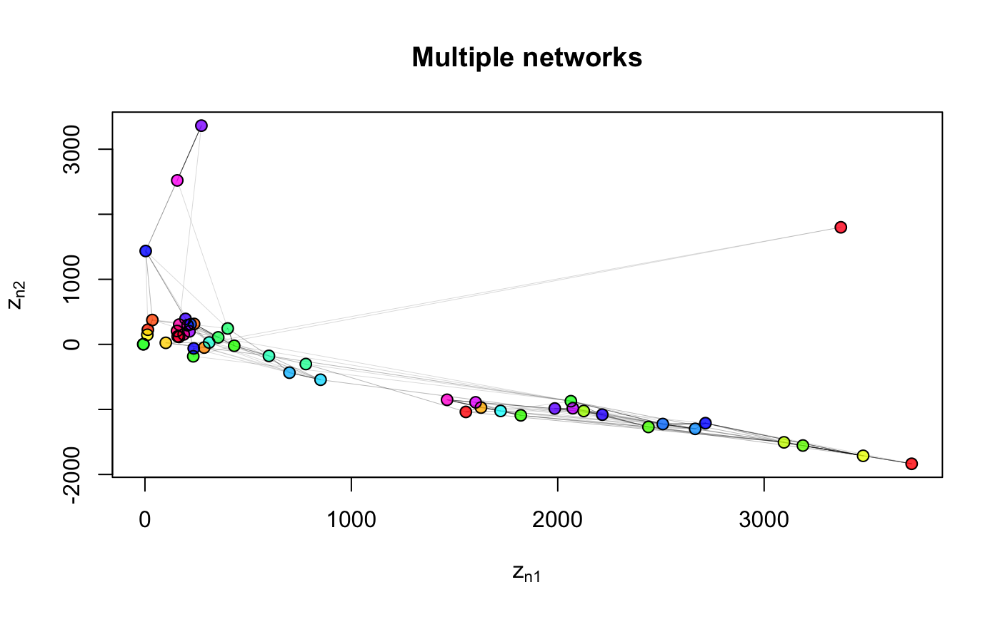
bpbLSJM <- boxroc(Y123,
EZ = modLSJM123$lsmEZ,
xiT = modLSJM123$xiT,
Lroc = 150,
ROC = TRUE,
BOXPLOT = TRUE,
labelsPlot = namesb
)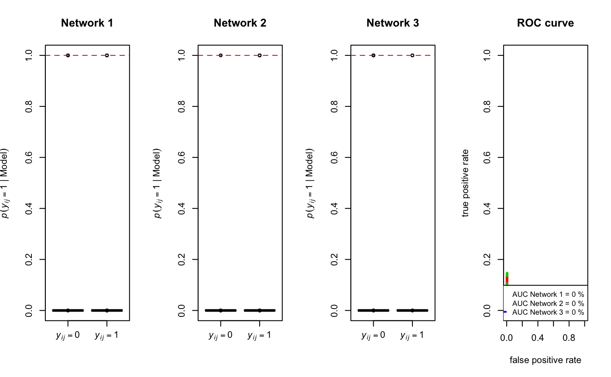
## Network 1 Network 2 Network 3
## 0.0002347765 0.0004450699 0.0001531604modLSJMgp <- lsjm(Ygp, D) # It takes ~ 45 secondspar(mfrow = c(1,2))
plotY(Yg, Ndata = 1, EZ = Zg, VZ = modLSMg$lsmVZ, main = namesa[1], xlim = XYlima, ylim = XYlima, colPl = colPl)
plotY(Yp, Ndata = 1, EZ = Zp, VZ = modLSMp$lsmVZ, main = namesa[2], xlim = XYlima, ylim = XYlima, colPl = colPl)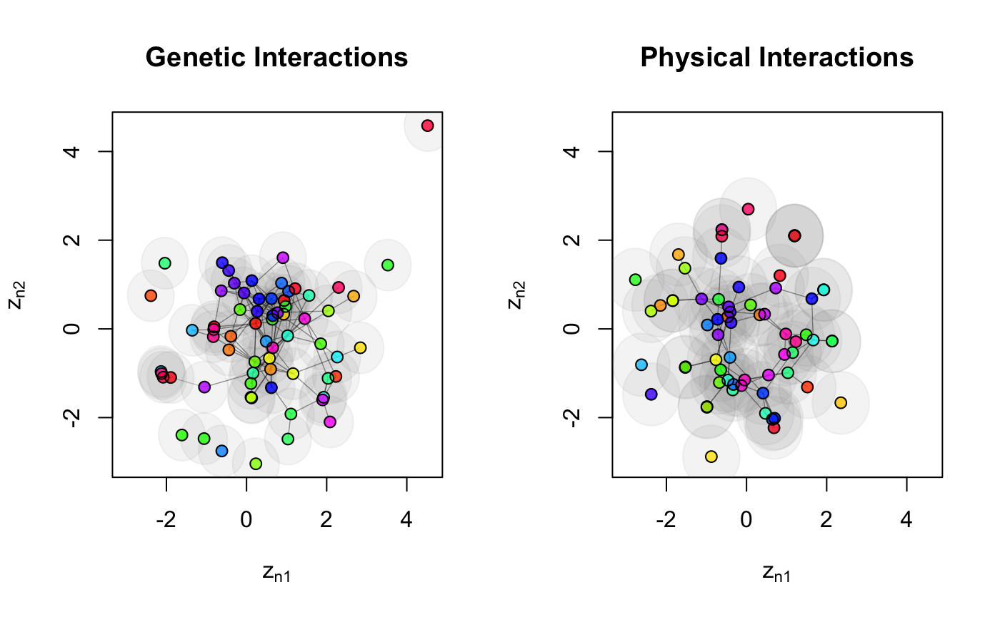
Zlsmgp <- list()
Zlsmgp[[1]] <- Zg
Zlsmgp[[2]] <- Zp
bpaLSM <- boxroc(Ygp,
EZ = Zlsmgp,
xiT = c(modLSMg$xiT, modLSMp$xiT),
Lroc = 150,
ROC = TRUE,
BOXPLOT = TRUE,
labelsPlot = namesa
)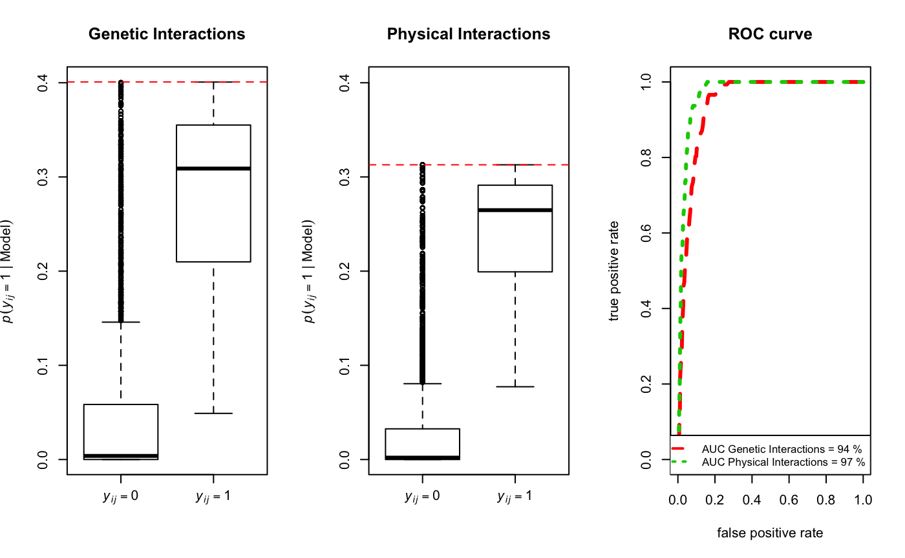
## Genetic Interactions Physical Interactions
## 0.9422889 0.9695702plot(modLSJMgp, Ygp, drawCB = TRUE, plotZtilde = TRUE, mainZtilde = namesa, colPl = colPl)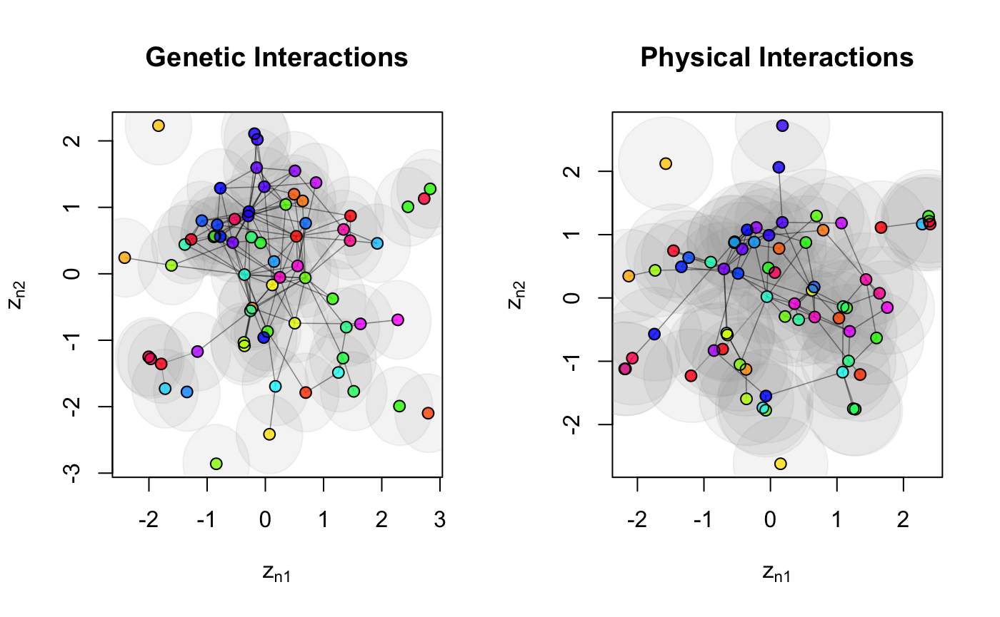
plot(modLSJMgp, Ygp, drawCB = TRUE, colPl = colPl)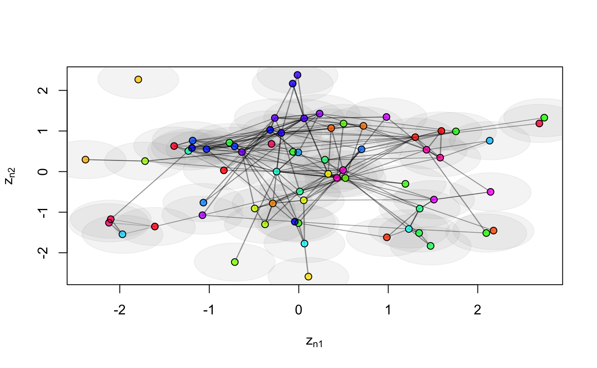
bpaLSJM <- boxroc(Ygp,
EZ = modLSJMgp$lsmEZ,
xiT = modLSJMgp$xiT,
Lroc = 150,
ROC = TRUE,
BOXPLOT = TRUE,
labelsPlot = namesa
)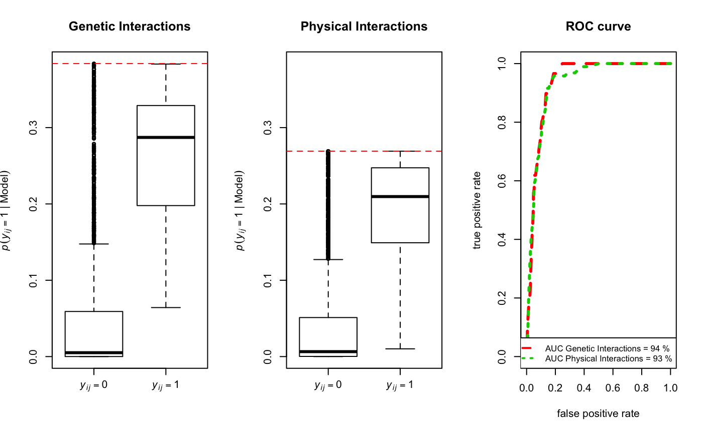
## Genetic Interactions Physical Interactions
## 0.9355736 0.9298801Remove unconnected nodes from Yg:
latentnet: Euclidean distance – mcmclibrary(latentnet)
timings[1] <- system.time(euclmcmc <- ergmm(nYg2 ~ euclidean(d = D)))[[3]]VBLPCM: Euclidean distance – variationallibrary(VBLPCM)
timings[2] <- system.time(euclvar <- vblpcmfit(vblpcmstart(nYg2, G = 1, d = D), maxiter = 300))[[3]]lvm4net: (Euclidean distance)^2 – variationaltimings[3] <- system.time(eucl2var <- lsm(Yg2, D) )[[3]]match rotations
par(mfrow = c(1,3))
plotY(Yg2, Ndata = 1, EZ = Zm, main = 'latentnet', font.main = 1, cex.main = 1, colPl = Att)
plotY(Yg2, Ndata = 1, EZ = Zv, main = 'VBLPCM', font.main = 1, cex.main = 1, colPl = Att)
plotY(Yg2, Ndata = 1, EZ = Z, main = 'lvm4net', font.main = 1, cex.main = 1, colPl = Att)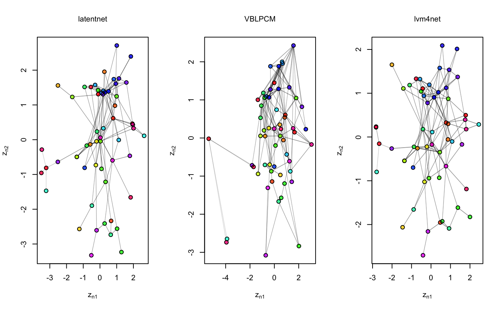
Zmv <- list()
Zmv[[1]] <- Zm
Zmv[[2]] <- Zv
Zmv[[3]] <- Z
a <- boxroc(Yg2,
EZ = Zmv,
xiT = c(euclmcmc$mkl$beta, euclvar$V_xi_e, eucl2var$xiT),
Lroc = 150,
ROC = TRUE,
BOXPLOT = TRUE,
labelsPlot = c('latentnet', 'VBLPCM', 'lvm4net'),
powdist = c(1, 1, 2),
main =''
)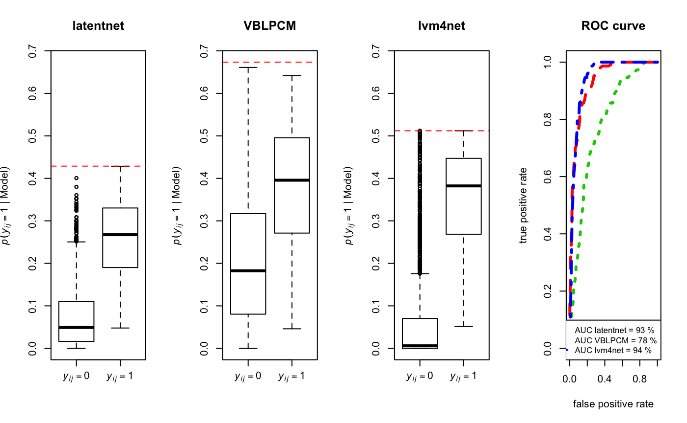
## latentnet VBLPCM lvm4net
## 0.9324235 0.7829326 0.9429421## AUC Timings in Sec
## latentnet 0.9324235 30.545
## VBLPCM 0.7829326 15.037
## lvm4net 0.9429421 1.838